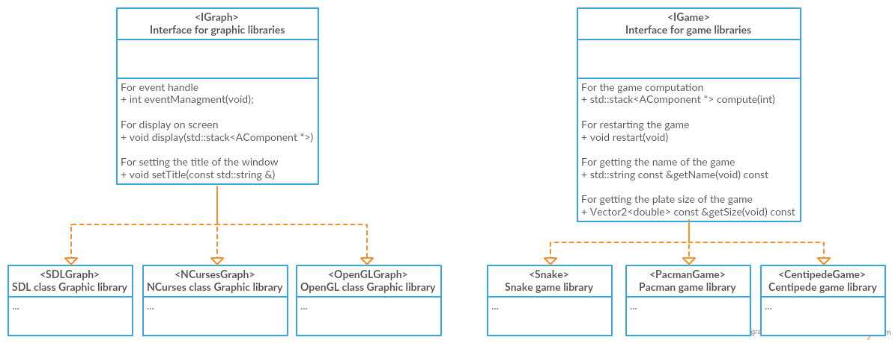

Arcade is a project that allow you to launch an arcade born with
multiple games in multiple graphic environment.
In addition, it allow you to add your own games and your own graphics
easily and that I'll teach you trough this tutorial.
To add your own modules, it is necessary for you to have solid bases in c++
If you'r not familiarly with this language, I advise you to learn it before because I won't teach you that.
For a rapid overview of how the project is build look at this Diagram

As you can see, the arcade is split in two parts that communicates each other through a stack of "AComponents *"
If you want to create a new Game you have to create a new class that inherit from IGame (we also add a class AGame if you want a fast and simple implementation)
As the same way for graphic libraries you have to create a new class that inherit from IGraph
All of this points will be shown to you in this tutorial.
It is important to note that we implements a common library at the root of the repository that you have to link to your libs.
You'll have to use it and moreover the constants in ArcadeSystem.hpp
In bonus, I'll show you how to create your own Components
As I said before you can add your own game in our Arcade by creating a new class that inherit from IGame interface (or AGame).
Because IGame is an interface, it contains pure methods that you have to implement in your class
If you choose to inherit from AGame, you only have to implement the method "Compute" and the method "Restart"
Compute is the method that will be called at each frame of the program (60 times per seconds).
That's the method that will update your game components position, statement or the map
I advise you to use GameComponents directly in your code because you'll have to push them in the stack returned
by the method compute. They will not be deleted in graphic library so be careful in your memory usage.
The method restart is the method that, as its name shows, will allow the user to restart your game from the beginning
The method getName is a getter for the name of your game, and the method getSize is a method for the size of your map
Create a ".so" library and copy it in "./games/" directory, it will be recognized by the arcade
Now that you have the keys to add your own game, lets try to implement a Bounce & Break
Okey, now that we're aware of how to create an Arcade game, lets try to create a Bounce & Break
I will remember you the rules of the game and you will try to create it alone
The Bounce & Break is a game in which you are a bat and you have to bounce a ball in order to break blocks
Each time you break a block your score increase and you only have 3 ball
To help you here's an API reference of our project
Now that we have our first game we can start to implement a new graphic environment
To create a new graphic library you'll have to create a new class that inherit from IGraph interface
Like IGame, you will have to implements few methods in your class
The method "eventManagment" is a method that will handle an event of your library
It is important to note that this handle have to be non-blocking, either games will freeze
The method "display" is a method that will receive a stack of Components that have to be displayed by the library
For a list of possible Components, search those that inherit from "AComponent"
The method "setTitle" is a method that allow us to change the title of the window
When you'r done, create a ".so" library and copy it in "./lib/" directory of load it in argument of the program
Good, now you know how to create your graphic library, lets try to create your own text display library
The goal is to make a graphical display only by writing characters on the standard output
You can clear the terminal with 'system("clear")'. You will implement the display of
GameComponents, UIComponents(DualTextComponent) and HighScoreComponent
Don't forget that you have an API reference
As you saw previously, components are used to allow the communication between the game libraries and the graphic libraries
So it could be interesting to know how create my your own Component
It's as simple as others, you have to create a new class that inherit from the AComponent class or from another daughter class
However, this component will be internally used by your game and your library, if you want to propose you component in a new release
do not hesitate to make a pull request on our github